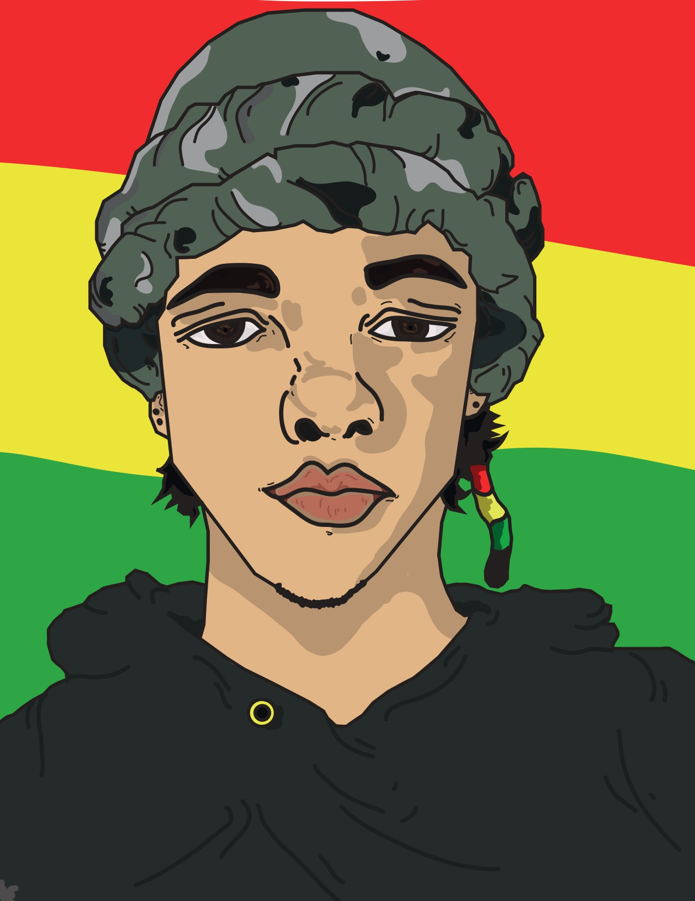
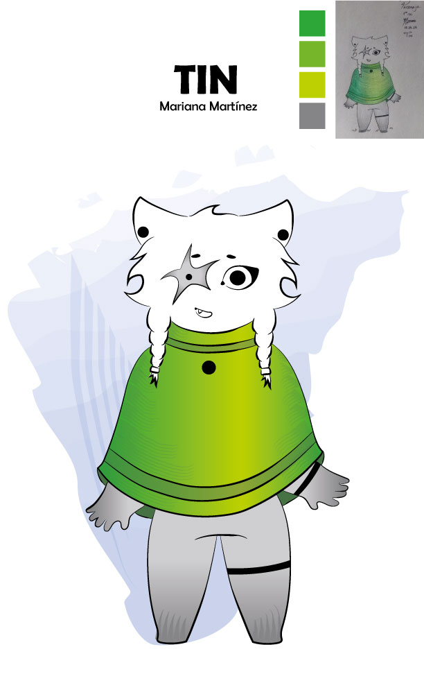

Proyecto APOE!
OBJETIVO CENTRAL
Reconectar con el placer de la lectura mediante una experiencia digital ilustrada, flexible y adaptada a los estilos de vida actuales, desarrollando habilidades cognitivas y emocionales a través de las obras de Poe.
CREADORES DEL PROYECTO
Nicolás Atehortua
Mariana Martínez


SENA - Producción Multimedia (2025)
"Buscamos crear una comunidad de 'cuervos lectores' para fomentar la conexión con la lectura de nuevo, dando honor a Poe."